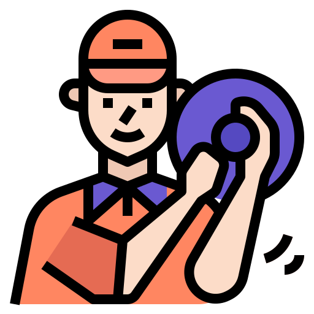
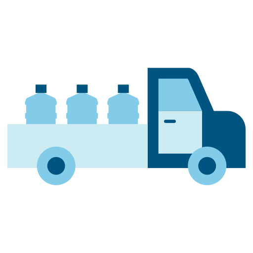
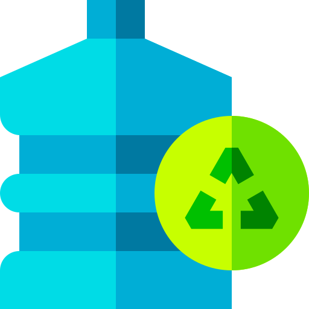
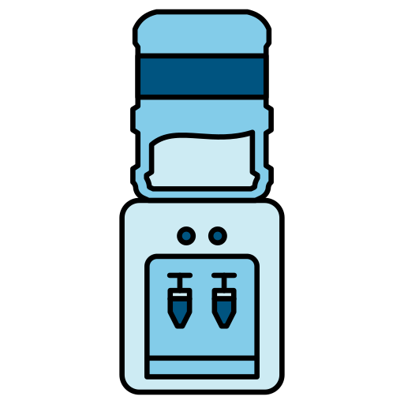

eEstamos comprometidos con la seguridad alimentaria y la salud de nuestros consumidores y cada decisión.
Tratada mediante filtro de micropartículas y de carbón activado para luego pasar al proceso de ozonización El ozono es un gas con un alto poder de oxidación, el tratamiento con este gas ha probado ser el métodomás eficiente para la esterilización, superando los procesos convencionales, como la irradiación UV, cloración, tratamientos con iones de plata y filtrado.Los bidones retornables, son de un material reciclable que no altera el sabor del agua resistente a los golpes y a los rayos UVPureza: Seguridad microbiológica. Débil mineralización: Sólo la cantidad indispensable ya que el resto de los minerales se obtiene con la alimentación habitual. Baja en nitratos y nitritos: entonces no resulta tóxica porque no genera metahemoglobinemia (enfermedad que impide transportar oxígeno a la sangre). Baja en sulfatos: Asegura excelente tolerancia digestiva. Baja en sodio: Permite incorporar el volumen de agua necesario sin riesgo de aumento de la presión arterial.
LIDERAZGO, COMPROMISO ,AMABILIDAD ,ATENCIÓN AL CLIENTE.



Bidones de agua Ionizados y Ozonizados hasta tu dirección.
Ph | 6,8
Dureza Total | 24mg CaC03/l
Solido disueltos totales | 82,5mg/l
Calcio |5,1 mg/l
Magnesio Total | 1,3mg/l
Potasio | 1,1 mg/l
Sodio | 14,9 mg/l